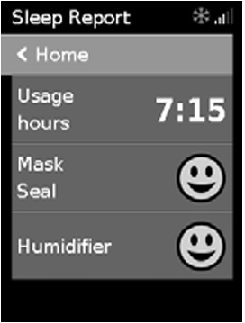

Understanding the Sleep Report
The Sleep Report screen is displayed and provides a summary of your therapy session.

-
Usage hours – Indicates the number of hours of therapy you received during the last session.
-
Mask Seal – Indicates how well your mask sealed:
- 😊 – Mask seal is adequate.
- 😔 – Mask needs adjusting. See Mask Fit.
-
Humidifier – Indicates if your humidifier is working properly:
- 😊 - Humidifier working.
- 😔 - Humidifier might be faulty – Contact your care provider.